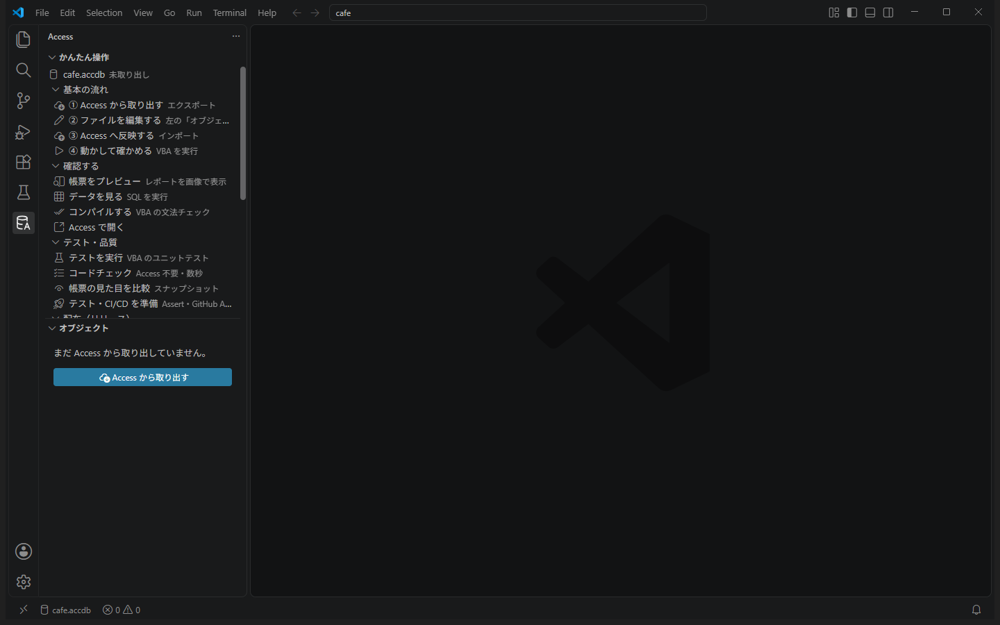
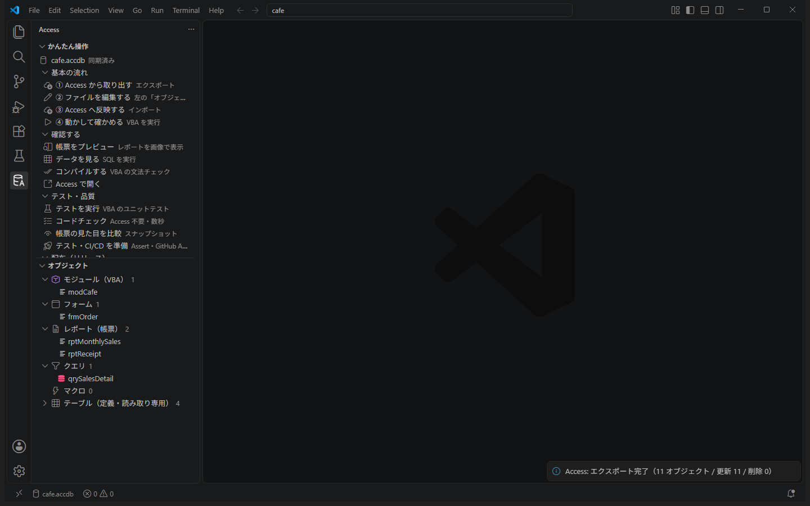
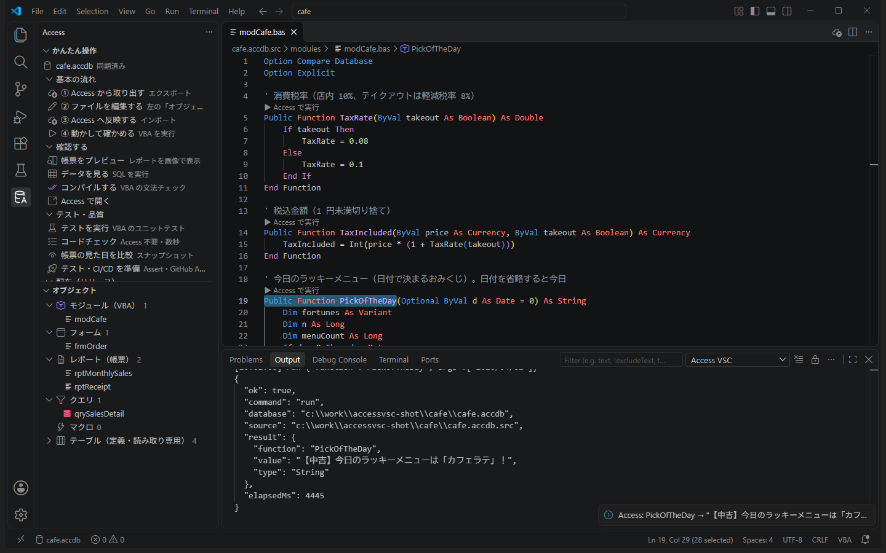
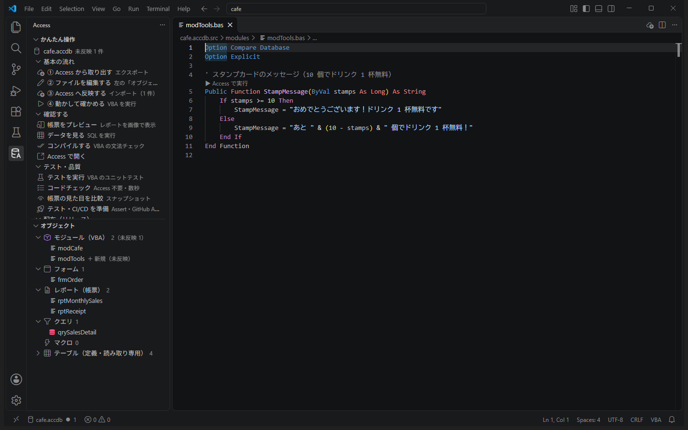
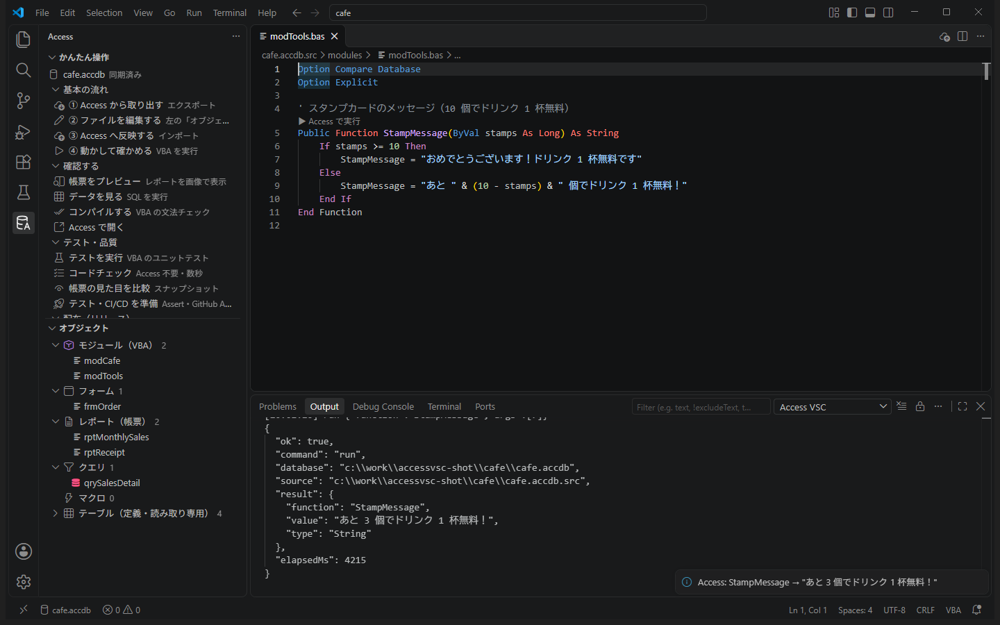
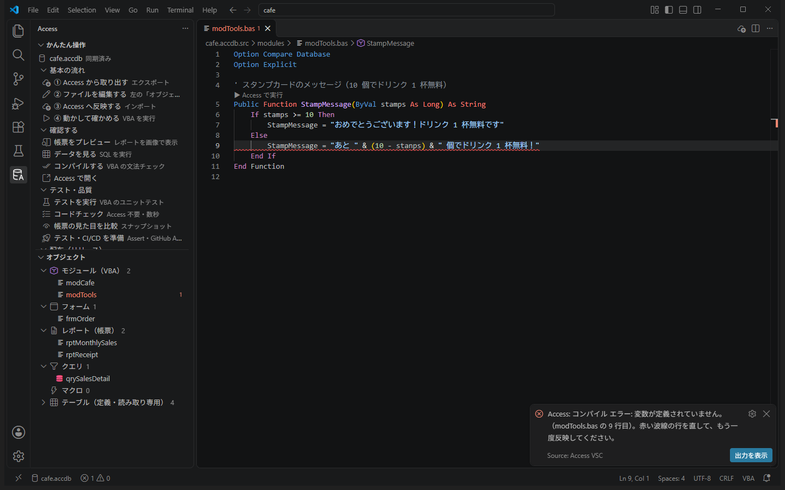
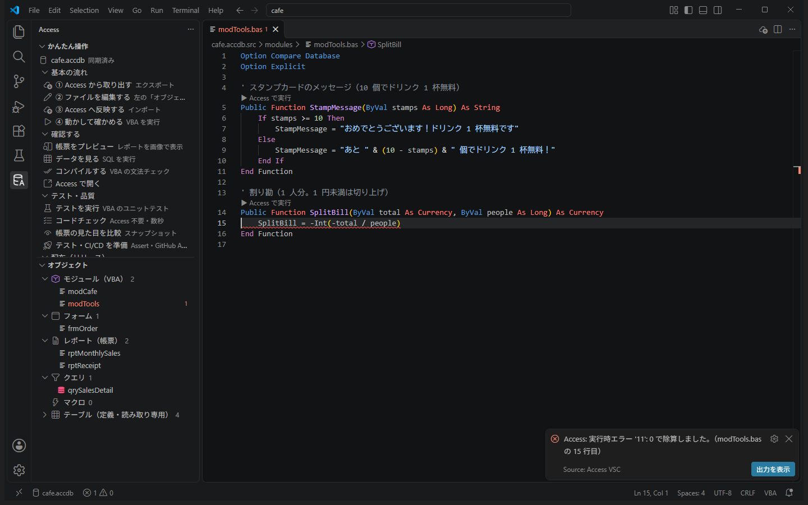
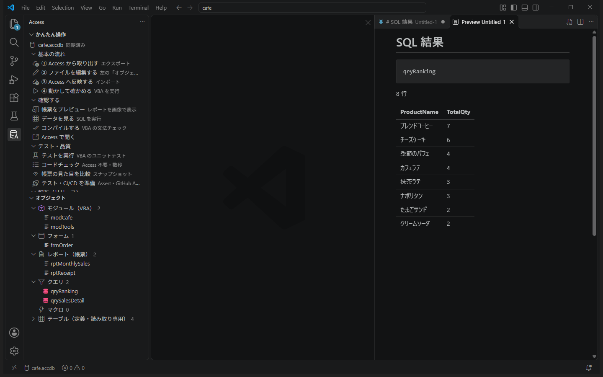
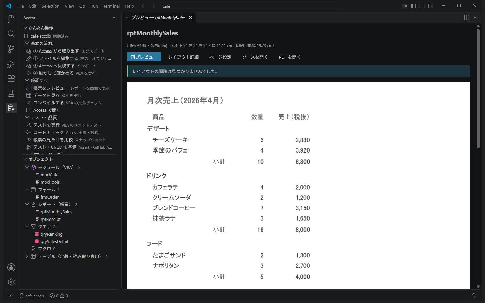

TUTORIAL ・ 初級編
初級編：基本操作
カフェ「こもれび」のデータベースを VS Code で開き、取り出す → 編集する → 反映する → 動かす の基本の流れを体験します。おみくじを引き、スタンプカードと割り勘の関数を作り、わざとエラーを起こし、人気メニューのランキングを出します。
0. 準備 10 分
ゴール：練習用サンプルを VS Code で開き、左の Access アイコンからサイドバーを表示する。
- 拡張機能をインストールする（まだの場合）Releases から
.vsixをダウンロードし、VS Code の拡張機能ビューの［…］→［VSIX からのインストール...］で選びます。 - 左端の Access アイコンを押すデータベースのアイコンに「A」が付いたものです。
- 「練習用サンプルを作る」を押すサイドバーの「その他」の中、またはデータベースがまだないときに出る案内の中にあります。作る場所（例：ドキュメント）を選ぶと、その中に
AccessVSC-練習フォルダができ、cafe.accdbが作られます（30 秒ほどかかります）。 - 「開く」を押す新しい VS Code のウィンドウでサンプルのフォルダが開きます。以降はこのウィンドウで作業します。

左に「かんたん操作」が表示され、一番上に
cafe.accdb と出ている。うまくいかないとき
- Access アイコンが出ない → Ctrl+Shift+P →「Reload Window」（再読み込み）
- サンプルが作れない → Microsoft Access がインストールされているか確認。「その他」→「ログを表示」に原因が出ます
- 「このフォルダーの作成者を信頼しますか？」と聞かれた → 練習用サンプルなので［はい、作成者を信頼します］。信頼しないと、この拡張機能は動きません
1. 取り出して中身を見る 5 分
ゴール：Access の中身をファイルに取り出し、どんなファイルになるかを見る。
- 「① Access から取り出す」を押す数秒で終わり、右下に「エクスポート完了」と出ます。
cafe.accdbの隣にcafe.accdb.srcフォルダができました。 - 「オブジェクト」の一覧を見るモジュール・フォーム・レポート・クエリ・テーブルに分かれて並んでいます。
- いくつか開いてみるクリックすると右側に開きます。
modCafe… いつもの VBA です。関数の上に「▶ Access で実行」が出ていますqrySalesDetail… クエリの SQL ですrptReceipt… レシートの設計図です。項目ごとに位置や大きさが数字で書かれていますfrmOrder… 注文入力の画面です。いちばん下のCodeBehindFormから後ろが、画面の VBA です- テーブルの
Products… 項目名や型の一覧です（見るだけのファイル）

「オブジェクト」に、モジュール 1・フォーム 1・レポート 2・クエリ 1・テーブル 4 が並んでいる。
2. 今日のラッキーメニュー 5 分
ゴール：VBA の関数を、VS Code から Access で動かす。
modCafeを開くいちばん下にPickOfTheDay（今日のラッキーメニュー）という関数があります。日付からおみくじとメニューを決める関数です。- 関数の上の「▶ Access で実行」を押す引数の入力欄が出ます。この関数の引数（日付）は省略できるので、空欄のまま Enter。右下に PickOfTheDay → "【小吉】今日のラッキーメニューは「…」！" のように出ます（結果は日によって変わります）。
- 日付を指定して実行もう一度「▶ Access で実行」を押し、今度は
"2026/04/01"（ダブルクォートで囲む）と入力して Enter。【中吉】今日のラッキーメニューは「カフェラテ」！ と出ます。同じ日付なら何度やっても同じ結果です。

2026/04/01 を指定すると「【中吉】…カフェラテ」が返ってくる。
裏で何が起きている？「▶ Access で実行」を押すと、見えないところで Access が起動し、
cafe.accdb を開いて関数を実行し、結果を VS Code に返して終了します。Access の画面を開く必要はありません。3. スタンプカードの関数 10 分
ゴール：新しいモジュールに関数を書き、Access に反映して実行する。
こもれびのスタンプカードは、10 個たまるとドリンクが 1 杯無料です。レジで「あと何個？」を表示するための関数を作ります。
- 新しいモジュールのファイルを作る左上のファイルのアイコン（エクスプローラー）を押し、
cafe.accdb.src→modulesフォルダを右クリック →［新しいファイル］→modTools.basと入力して Enter。
ファイル名（.basを除いた部分）がそのままモジュール名になります。 - 次のコードを書いて保存（Ctrl+S）
左の Access アイコンに戻ると、Option Compare Database Option Explicit ' スタンプカードのメッセージ（10 個でドリンク 1 杯無料） Public Function StampMessage(ByVal stamps As Long) As String If stamps >= 10 Then StampMessage = "おめでとうございます！ドリンク 1 杯無料です" Else StampMessage = "あと " & (10 - stamps) & " 個でドリンク 1 杯無料！" End If End FunctionmodToolsに「＋ 新規（未反映）」と出ています。画面の一番下にも、まだ反映していない数が表示されます。 - 「③ Access へ反映する」を押す右下に「インポート 1 件 / コンパイル OK」と出れば成功です。
- 関数の上の「▶ Access で実行」を押し、
7と入力右下に "あと 3 個でドリンク 1 杯無料！" と出ます。 - もう一度、今度は
10で実行"おめでとうございます！ドリンク 1 杯無料です" と出ます。


7 で実行すると「あと 3 個で…」、10 で実行すると「おめでとうございます！…」が返ってくる。
うまくいかないとき
- 「データベースが Access などで開かれています」 → Access の画面で cafe.accdb を開いていたら閉じる
- 「▶ Access で実行」が出ない → ファイル名の拡張子が
.basか、modulesフォルダの中かを確認 - 文字列を渡したいときは
"山田"のようにダブルクォートで囲みます
4. わざと間違えてみる 10 分
ゴール：コンパイル エラーと実行時エラーが、どこにどう表示されるかを知る。
コンパイル エラー（書き間違い）
- 変数名を間違える
(10 - stamps)を(10 - stanps)に書き換えて保存。 - 「③ Access へ反映する」その行に赤い波線が付き、右下に「コンパイル エラー: 変数が定義されていません。（modTools.bas の 9 行目）」と出ます。
- 元に戻して、もう一度反映「コンパイル OK」に戻れば大丈夫です。

実行時エラー（動かしたときのエラー）
次は割り勘の計算です。お会計を人数で割り、1 円未満は切り上げます（端数はお店ではなくお客さま側で多めに払う、という決まりにします）。
modTools.basの最後に、割り勘の関数を足して保存' 割り勘（1 人分。1 円未満は切り上げ） Public Function SplitBill(ByVal total As Currency, ByVal people As Long) As Currency SplitBill = -Int(-total / people) End Function-Int(-x)は「切り上げ」の定番の書き方です。- 反映して、
SplitBillを引数2719, 3で実行2,719 円を 3 人で割ると 906.33… なので、907 になります。 - 今度は
2719, 0で実行0 人で割ったので、割り算の行に赤い波線が付き、「実行時エラー '11': 0 で除算しました。」と出ます。
（Access の画面だとエラーのダイアログで止まるところですが、自動で閉じてエラーの場所を教えてくれます。） - 人数が 0 以下のときは 0 を返すように直す
保存 → 反映 → 同じ引数で実行すると、0 が返ります。Public Function SplitBill(ByVal total As Currency, ByVal people As Long) As Currency If people <= 0 Then SplitBill = 0 Exit Function End If SplitBill = -Int(-total / people) End Function

コンパイル エラーは「反映したとき」、実行時エラーは「実行したとき」に、どちらも該当の行に赤い波線で出ることがわかった。
5. 人気メニューのランキング 10 分
ゴール：テーブルの中身を確認し、新しいクエリを SQL で作って動かす。
- テーブルの中身を見る「オブジェクト」→「テーブル」を開き、
Membersにマウスを乗せて右端の ▶ を押すと、会員とスタンプの数が表で表示されます。山田 花子さんはスタンプ 8 個。さっきの関数なら「あと 2 個」ですね。 - 新しいクエリのファイルを作る
queriesフォルダにqryRanking.sqlを作り、次を書いて保存。SELECT p.ProductName, Sum(d.Qty) AS TotalQty FROM OrderDetails AS d INNER JOIN Products AS p ON d.ProductID = p.ID GROUP BY p.ProductName ORDER BY Sum(d.Qty) DESC; - 「③ Access へ反映する」Access に
qryRankingというクエリができます。 - クエリの ▶ で実行メニューごとの注文数が、多い順に表示されます。

1 位がブレンドコーヒー（7 杯）、2 位がチーズケーキ（6 個）になっている。
データは書き換わりませんここで実行できるのは、データを読むだけの SELECT です。
.sql を開いたときに上に出る「▶ この SQL を実行」でも、保存前に試せます。（やってみよう）テイクアウトだけのランキング
INNER JOIN の行の下に WHERE d.Takeout = True を足して実行してみましょう。持ち帰りで人気なのはどれでしょう？6. 帳票を見る 5 分
ゴール：レポートの印刷イメージを VS Code の中で見る。
- 月次売上を見る「オブジェクト」→「レポート」の
rptMonthlySalesにあるプレビューボタン（目のアイコン）を押すと、印刷イメージが画像で表示されます。分類（デザート・ドリンク・フード）ごとに小計が出ています。 - レシートを見る
rptReceiptのプレビュー。注文 1 件が 1 ページで、No.1 から No.12 まで並びます。 - レポートのファイルを開いてみる
rptReceiptをクリック。Begin LabelやBegin TextBoxのかたまりが 1 つの項目で、Left（左からの位置）・Top（上からの位置）・Width（幅）などが数字で書かれています。単位は twip で、1 cm = 567 です。中級編では、ここを書き換えて帳票を直します。

月次売上の小計が、デザート 6,800・ドリンク 8,000・フード 4,000 になっている。
7. Access で注文画面を触る 10 分
ゴール：Access の画面でフォームを動かし、終わったら閉じる（ここが大事）。
- 「確認する」→「Access で開く」いつもの Access の画面で cafe.accdb が開きます。
- 左のナビゲーション ウィンドウから
frmOrderを開く注文入力の画面です。 - 「今日のラッキーメニュー」を押す下に今日のおみくじが出ます。2 で作った関数が、画面のボタンから呼ばれています。
- 注文を計算する商品で「カフェラテ」を選び、数量に
2を入れて「計算」。税抜金額 1,000・税込金額 1,100（店内なので 10%）です。 - テイクアウトにしてみる「テイクアウト（持ち帰り）」にチェックを入れて、もう一度「計算」。テイクアウトは軽減税率 8% なので 1,080 になるはずですが…1,100 のままです。
実はこれが、中級編で直す「店長からの問い合わせ」です。 - Access を閉じる右上の × で Access を終了します。
Access で開いたままだと、反映できませんAccess の画面でデータベースを開いている間は、「③ Access へ反映する」などの書き込みが「データベースが Access などで開かれています」で止まります（壊さないための安全装置です）。Access で確かめたら、必ず閉じてから VS Code に戻りましょう。
ラッキーメニューのボタンが動き、テイクアウトでも 1,100 のままになることを確かめた。Access を閉じた。
8. まとめ 5 分
初級編でやったこと：
| やったこと | 使ったもの | もっと知るには |
|---|---|---|
| 取り出す・編集・反映・実行 | ①〜③のボタン、▶ Access で実行 | 学習コース 初級「毎日の流れ」 |
| エラーの読み方 | 赤い波線、問題パネル | 初級「エラーと付き合う」 |
| クエリ | queries/*.sql、▶ で実行 | リファレンス「ファイルの書き方」 |
| 帳票を見る | プレビュー | 中級「帳票レイアウトの考え方」 |
（おまけ）AI に聞いてみるClaude Code や GitHub Copilot を使っているなら、サイドバーの「AI と使う」→「AI エージェント連携を設定」をしておくと、「スタンプが 20 個なら 2 杯無料、にして」のように頼めます。本格的には中級編で。